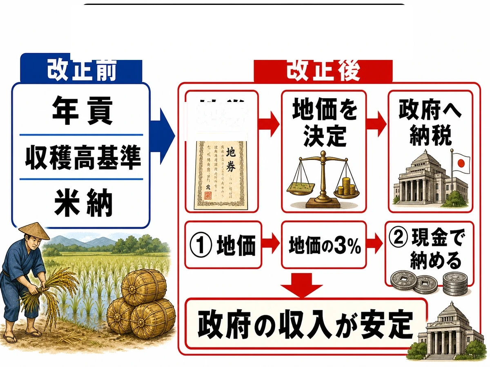
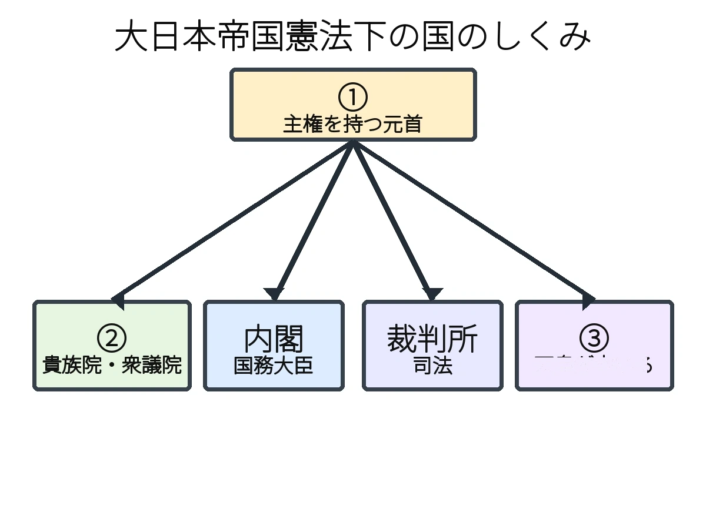

歴史 ⑪問題集Web版
明治維新と立憲国家
明治時代前期
 いっしょに
いっしょにがんばろう！
💡タブか下のリストから単元を選ぼう！
やり方（おすすめ順・穴埋め・一問一答・4択・記述）は単元を開いてから選べるよ。
📖 参考書Web版を開く
やり方（おすすめ順・穴埋め・一問一答・4択・記述）は単元を開いてから選べるよ。
年
年表でチェック
（ ）をタップすると答えが出るよ。まずは自分で言ってから確かめよう！
| 年代 | できごと |
|---|---|
| 1868年 | 明治天皇が新政府の方針を示すを発表する |
| 1869年 | 藩主が土地と人民を朝廷に返すが行われる |
| 1871年 | 全国の藩を廃止して県を置くが行われる |
| 1871年 | 岩倉具視を大使とするが欧米に派遣される |
| 1872年 | 6歳以上のすべての子どもに教育を受けさせるが公布される |
| 1873年 | 満20歳の男子に兵役を課すが定められる |
| 1873年 | 地価を基準に現金で税を納めさせるが始まる |
| 1873年 | 朝鮮への出兵をめぐるが否決され、西郷隆盛らが政府を去る |
| 1874年 | 板垣退助らが国会開設を求めるを提出する |
| 1875年 | ロシアとの国境を定めるが結ばれる |
| 1876年 | 江華島事件をきっかけに朝鮮とが結ばれる |
| 1877年 | 西郷隆盛を中心に士族最大の反乱が起こる |
| 1879年 | 琉球藩を廃止して沖縄県を置くが行われる |
| 1881年 | 板垣退助がを結成する |
| 1889年 | 天皇主権のが発布される |
| 1890年 | 第1回が開かれ、同じ年にも出される |
1
明治維新と新政府
▶やり方をえらぼう目次にもどれば何度でも変えられるよ
解答
採点
順番
順番
A要点まとめ（ ）をタップして確かめよう
📖 先に参考書で理解する
1868年、江戸をと改め、明治天皇は公家や諸侯に新しい国づくりの方針を示すを発表した。政府は中央集権国家をつくるため、1869年に薩長土肥の藩主が率先して土地と人民を朝廷に返すを行わせ、1871年には全国の藩を廃止して府県を置くを断行し、中央からを派遣した。また江戸時代の身分制度を改め、公家・大名を華族、武士を士族、農工商を平民とするの政策を進め、えた・ひにんの呼称を廃止するも出したが、差別は根強く残った。しかし新政府の要職は薩摩・長州など特定の藩の出身者が独占するとなり、のちの批判を招くことになった。
B一問一答1 / 14
明治政府が行った政治・社会の大改革は？
📖 解説を読む（ヒント）
明治維新
1868年から始まる、江戸幕府に代わって天皇中心の中央集権国家を作るために行われた政治・経済・社会の一連の大改革。
B一問一答2 / 14
1868年に明治天皇が発表した、新しい国づくりの基本方針は？
📖 解説を読む（ヒント）
五箇条の御誓文
1868年に明治天皇が公家・諸侯に示した5か条の方針。広く会議を開く、開国和親など新政府の基本方針を内外に示した。
B一問一答3 / 14
1869年、藩主が土地と人民を朝廷に返したことは？
📖 解説を読む（ヒント）
版籍奉還
1869年、明治維新を主導した4藩(薩摩・長州・土佐・肥前=薩長土肥)が先行し、全藩主が土地と人民を朝廷に返した改革。
B一問一答4 / 14
1871年、藩を廃止して県を設置した改革は？
📖 解説を読む（ヒント）
廃藩置県
1871年に明治政府が全国の藩を一斉に廃止して府県を設置し、政府が任命した県令を派遣して中央集権国家を確立した改革。
B一問一答5 / 14
江戸時代の身分制度を改め、平等な社会を目指したことは？
📖 解説を読む（ヒント）
四民平等
明治政府が江戸時代の士農工商を廃し、公家・大名を華族、武士を士族、農工商を平民に再編し職業や結婚の自由を認めた政策。
B一問一答6 / 14
1871年、えた・ひにんと呼ばれた人々を平民としたお触れは？
📖 解説を読む（ヒント）
解放令
1871年、明治政府がえた・ひにんの呼称を廃止し平民とすると定めた布告。形式上は平民となったが、差別は根強く残った。
B一問一答7 / 14
薩摩・長州など特定の藩出身者が政治を独占したことは？
📖 解説を読む（ヒント）
藩閥政治
明治維新の中心となった薩摩・長州・土佐・肥前の出身者が政府要職を独占した体制で、自由民権運動で批判の対象となった。
B一問一答8 / 14
明治時代に公家や大名がなった身分は？
📖 解説を読む（ヒント）
華族
1869年の版籍奉還で公家や大名がなった身分。皇族の下、士族の上に位置づけられ、貴族院議員などの特権を持った。
B一問一答9 / 14
明治時代にもと武士がなった身分は？
📖 解説を読む（ヒント）
士族
旧武士がなった身分。給料の打ち切り(秩禄処分)や刀を持つ禁止(廃刀令)で特権を失い、各地で反乱を起こす者も多かった。
B一問一答10 / 14
中央政府に権力を集中させる政治体制は？
📖 解説を読む（ヒント）
中央集権
中央政府に立法・行政・軍事などの権力を集中させる政治体制。1871年の廃藩置県で藩を廃止することにより確立された。
B一問一答11 / 14
江戸の名称を変えた新しい首都の名前は？
📖 解説を読む（ヒント）
東京
1868年に明治政府が江戸を改称した新首都の名前。翌1869年に天皇が京都から移り、日本の政治・経済の中心となった。
B一問一答12 / 14
五箇条の御誓文が発表された年は？
📖 解説を読む（ヒント）
1868年
1868年、明治天皇が公家・諸侯を集めて新しい国づくりの基本方針を示した年で、明治新政府の出発点となった。
B一問一答13 / 14
版籍奉還が行われた年は？
📖 解説を読む（ヒント）
1869年
1869年、薩長土肥の4藩主が率先し全藩主が土地（版）と人民（籍）を朝廷に返した年で、中央集権化の第一歩となった。
B一問一答14 / 14
廃藩置県が行われた年は？
📖 解説を読む（ヒント）
1871年
1871年、明治政府が全国の藩を一斉に廃止し府県を設置、政府任命の県令を派遣して中央集権国家を確立した画期的な改革。
B一問一答全14問・まとめて採点
まず全部の問題にこたえてから、下のボタンでまとめて答え合わせしよう！
(1)明治政府が行った政治・社会の大改革は？
明治維新
1868年から始まる、江戸幕府に代わって天皇中心の中央集権国家を作るために行われた政治・経済・社会の一連の大改革。
(2)1868年に明治天皇が発表した、新しい国づくりの基本方針は？
五箇条の御誓文
1868年に明治天皇が公家・諸侯に示した5か条の方針。広く会議を開く、開国和親など新政府の基本方針を内外に示した。
(3)1869年、藩主が土地と人民を朝廷に返したことは？
版籍奉還
1869年、明治維新を主導した4藩(薩摩・長州・土佐・肥前=薩長土肥)が先行し、全藩主が土地と人民を朝廷に返した改革。
(4)1871年、藩を廃止して県を設置した改革は？
廃藩置県
1871年に明治政府が全国の藩を一斉に廃止して府県を設置し、政府が任命した県令を派遣して中央集権国家を確立した改革。
(5)江戸時代の身分制度を改め、平等な社会を目指したことは？
四民平等
明治政府が江戸時代の士農工商を廃し、公家・大名を華族、武士を士族、農工商を平民に再編し職業や結婚の自由を認めた政策。
(6)1871年、えた・ひにんと呼ばれた人々を平民としたお触れは？
解放令
1871年、明治政府がえた・ひにんの呼称を廃止し平民とすると定めた布告。形式上は平民となったが、差別は根強く残った。
(7)薩摩・長州など特定の藩出身者が政治を独占したことは？
藩閥政治
明治維新の中心となった薩摩・長州・土佐・肥前の出身者が政府要職を独占した体制で、自由民権運動で批判の対象となった。
(8)明治時代に公家や大名がなった身分は？
華族
1869年の版籍奉還で公家や大名がなった身分。皇族の下、士族の上に位置づけられ、貴族院議員などの特権を持った。
(9)明治時代にもと武士がなった身分は？
士族
旧武士がなった身分。給料の打ち切り(秩禄処分)や刀を持つ禁止(廃刀令)で特権を失い、各地で反乱を起こす者も多かった。
(10)中央政府に権力を集中させる政治体制は？
中央集権
中央政府に立法・行政・軍事などの権力を集中させる政治体制。1871年の廃藩置県で藩を廃止することにより確立された。
(11)江戸の名称を変えた新しい首都の名前は？
東京
1868年に明治政府が江戸を改称した新首都の名前。翌1869年に天皇が京都から移り、日本の政治・経済の中心となった。
(12)五箇条の御誓文が発表された年は？
1868年
1868年、明治天皇が公家・諸侯を集めて新しい国づくりの基本方針を示した年で、明治新政府の出発点となった。
(13)版籍奉還が行われた年は？
1869年
1869年、薩長土肥の4藩主が率先し全藩主が土地（版）と人民（籍）を朝廷に返した年で、中央集権化の第一歩となった。
(14)廃藩置県が行われた年は？
1871年
1871年、明治政府が全国の藩を一斉に廃止し府県を設置、政府任命の県令を派遣して中央集権国家を確立した画期的な改革。

2
三大改革
▶やり方をえらぼう目次にもどれば何度でも変えられるよ
解答
採点
順番
順番
A要点まとめ（ ）をタップして確かめよう
📖 先に参考書で理解する
明治政府は近代国家の基礎を築くため、教育・軍事・税制の3分野でと呼ばれる制度改革を行った。1872年にはフランスを参考に、6歳以上のすべての男女に教育を受けさせるが公布されたが、授業料が家庭の負担となったため反対も多かった。1873年には満20歳の男子に兵役を課すが定められ、士族・平民の区別なく兵役を負うの原則が実現したが、「血税」という言葉を誤解した農民がを起こす地域もあった。同じ1873年、土地の価格である地価の3%を土地所有者が現金で納めるが始まり、土地の所有を証明するが発行されたが、重い負担への反対から各地でが起こり、1877年に税率は2.5%に引き下げられた。
B一問一答1 / 14
1872年に出された、6歳以上の男女全員に教育を受けさせる制度は？
📖 解説を読む（ヒント）
学制
1872年、フランスを参考に出された日本初の近代学校制度。全国に小学校が作られたが、授業料は家庭負担で反対も多かった。
B一問一答2 / 14
1873年、満20歳の男子に兵役を課す法律は？
📖 解説を読む（ヒント）
徴兵令
1873年公布。士族・平民の身分に関わらず満20歳の男子に兵役の義務を課し、国民皆兵による近代軍隊を実現した法律。
B一問一答3 / 14
1873年、税金の仕組みを変えた改革は？
📖 解説を読む（ヒント）
地租改正
1873年、米の収穫高でなく地価の3%を土地所有者が現金で納める制度に変更した税制改革。政府の税収が安定した。
B一問一答4 / 14
国民全員が兵役の義務を負うという考え方は？
📖 解説を読む（ヒント）
国民皆兵
1873年の徴兵令の基本となった考え方で、士族・平民を問わず満20歳の男子全員に兵役の義務を負わせる近代軍隊の原則。
B一問一答5 / 14
地租改正で土地所有者に発行された、所有を証明する文書は？
📖 解説を読む（ヒント）
地券
1873年の地租改正で土地所有者に発行された証書。これにより土地の所有権が法的に認められ、納税義務を負う者が明確化した。
B一問一答6 / 14
地租改正で税額の基準とされた、土地の価格は？
📖 解説を読む（ヒント）
地価
1873年の地租改正で税額の基準とされた土地の価格。当初は地価の3%、地租改正反対一揆を受けて1877年に2.5%に引き下げられた。
B一問一答7 / 14
1873年の税制改革で導入された、土地の価格を基準にかける税は？
📖 解説を読む（ヒント）
地租
1873年の地租改正で導入された新しい税。地価の3%を土地所有者が米ではなく現金で納める仕組みで、税収が安定した。
B一問一答8 / 14
明治政府が国民の生活・税・教育を近代化するために実施した3つの政策の総称は？
📖 解説を読む（ヒント）
三大改革
学制（教育）・徴兵令（軍隊）・地租改正（税）の3つで、欧米に追いつくための近代化政策の柱となった。
B一問一答9 / 14
学制で小学校に通うことになった子どもの年齢は？
📖 解説を読む（ヒント）
6歳以上
1872年の学制で小学校に通うことが定められた年齢。男女すべてが対象とされ、近代教育制度の基礎となった。
B一問一答10 / 14
徴兵令で兵役の義務が課せられた年齢は？
📖 解説を読む（ヒント）
満20歳
1873年の徴兵令で兵役の義務が課せられた年齢。士族・平民の身分に関わらず適用され、国民皆兵の原則が実現した。
B一問一答11 / 14
地租改正で税金を納める方法は？
📖 解説を読む（ヒント）
現金（金納）
1873年の地租改正で導入された納税方法。米で納める物納から現金で納める方法に変わり、政府の税収が安定した。
B一問一答12 / 14
地租改正で定められた当初の税率は？
📖 解説を読む（ヒント）
3%
1873年の地租改正で定められた当初の税率で、地価に対する割合。1877年に地租改正反対一揆を受けて2.5%に引き下げられた。
B一問一答14 / 14
徴兵令と地租改正が行われた年は？
📖 解説を読む（ヒント）
1873年
1873年、満20歳男子の兵役義務を定めた徴兵令と、地価の3%を現金で納める地租改正という兵制・税制の大改革が同年に行われた。
B一問一答全14問・まとめて採点
まず全部の問題にこたえてから、下のボタンでまとめて答え合わせしよう！
(1)1872年に出された、6歳以上の男女全員に教育を受けさせる制度は？
学制
1872年、フランスを参考に出された日本初の近代学校制度。全国に小学校が作られたが、授業料は家庭負担で反対も多かった。
(2)1873年、満20歳の男子に兵役を課す法律は？
徴兵令
1873年公布。士族・平民の身分に関わらず満20歳の男子に兵役の義務を課し、国民皆兵による近代軍隊を実現した法律。
(3)1873年、税金の仕組みを変えた改革は？
地租改正
1873年、米の収穫高でなく地価の3%を土地所有者が現金で納める制度に変更した税制改革。政府の税収が安定した。
(4)国民全員が兵役の義務を負うという考え方は？
国民皆兵
1873年の徴兵令の基本となった考え方で、士族・平民を問わず満20歳の男子全員に兵役の義務を負わせる近代軍隊の原則。
(5)地租改正で土地所有者に発行された、所有を証明する文書は？
地券
1873年の地租改正で土地所有者に発行された証書。これにより土地の所有権が法的に認められ、納税義務を負う者が明確化した。
(6)地租改正で税額の基準とされた、土地の価格は？
地価
1873年の地租改正で税額の基準とされた土地の価格。当初は地価の3%、地租改正反対一揆を受けて1877年に2.5%に引き下げられた。
(7)1873年の税制改革で導入された、土地の価格を基準にかける税は？
地租
1873年の地租改正で導入された新しい税。地価の3%を土地所有者が米ではなく現金で納める仕組みで、税収が安定した。
(8)明治政府が国民の生活・税・教育を近代化するために実施した3つの政策の総称は？
三大改革
学制（教育）・徴兵令（軍隊）・地租改正（税）の3つで、欧米に追いつくための近代化政策の柱となった。
(9)学制で小学校に通うことになった子どもの年齢は？
6歳以上
1872年の学制で小学校に通うことが定められた年齢。男女すべてが対象とされ、近代教育制度の基礎となった。
(10)徴兵令で兵役の義務が課せられた年齢は？
満20歳
1873年の徴兵令で兵役の義務が課せられた年齢。士族・平民の身分に関わらず適用され、国民皆兵の原則が実現した。
(11)地租改正で税金を納める方法は？
現金（金納）
1873年の地租改正で導入された納税方法。米で納める物納から現金で納める方法に変わり、政府の税収が安定した。
(12)地租改正で定められた当初の税率は？
3%
1873年の地租改正で定められた当初の税率で、地価に対する割合。1877年に地租改正反対一揆を受けて2.5%に引き下げられた。
(13)学制が出された年は？
1872年
1872年、フランスを参考にした日本初の近代学校制度として学制が出され、全国を学区に分けて小学校が設置された。
(14)徴兵令と地租改正が行われた年は？
1873年
1873年、満20歳男子の兵役義務を定めた徴兵令と、地価の3%を現金で納める地租改正という兵制・税制の大改革が同年に行われた。
E資料問題写真を見て答えよう

(1)図のように、土地の価格（地価）を基準に税を現金で納めさせるようにした、1873年からの改革を何というか。
(2)図中で、地租改正の際に土地の所有者に発行された、地価などを記した証明書を何というか。
3
富国強兵と文明開化
▶やり方をえらぼう目次にもどれば何度でも変えられるよ
解答
採点
順番
順番
A要点まとめ（ ）をタップして確かめよう
📖 先に参考書で理解する
明治政府は欧米に対抗するため、国を豊かにし軍隊を強くするをスローガンに掲げ、その土台として近代産業を育てる政策を進めた。群馬県には官営模範工場の代表であるが建てられ、フランスの技術で生糸を生産して民間の手本となった。1872年には新橋・横浜間にが開通し、前島密が整備した郵便制度や新貨条例による円・銭・厘の統一貨幣も近代化を支えた。1873年には欧米にならいも採用された。都市では欧米の文化や生活様式が広まるが進み、ガス灯や牛鍋などの新しい風俗が人々の暮らしを変えた。思想の面でも、「学問のすゝめ」で人間の平等と学問の大切さを説いたや、ルソーの思想を紹介し「東洋のルソー」と呼ばれたが人々に大きな影響を与えた。
B一問一答1 / 14
国を豊かにし、軍隊を強くするという明治政府のスローガンは？
📖 解説を読む（ヒント）
富国強兵
「国を富ませ軍を強くする」という明治政府の国家目標。欧米列強に対抗するため殖産興業と軍備拡張を一体で進めた。
B一問一答2 / 14
近代的な産業を育成する政策は？
📖 解説を読む（ヒント）
殖産興業
明治政府が欧米に追いつくため、官営模範工場の建設や鉄道の敷設、郵便制度の整備など、政府主導で近代産業を育成した政策。
B一問一答3 / 14
フランスの技術を導入した群馬県の官営模範工場は？
📖 解説を読む（ヒント）
富岡製糸場
1872年に群馬県に建設された官営模範工場。フランス技術で高品質な生糸を生産し、民間製糸業の手本となった。世界文化遺産。
B一問一答4 / 14
政府が直接運営し、民間の手本とした工場は？
📖 解説を読む（ヒント）
官営模範工場
明治政府が殖産興業のため建設し、欧米の技術と経営方法を民間に普及させる役割を担った。富岡製糸場などが代表例。
B一問一答5 / 14
欧米の文化や生活様式が急速に広まった風潮は？
📖 解説を読む（ヒント）
文明開化
明治初期、東京を中心にガス灯・レンガ造り・洋服・牛鍋などの欧米文化が広まり、人々の生活様式が大きく変化した風潮。
B一問一答7 / 14
福沢諭吉が著した、学問の重要性を説いた本は？
📖 解説を読む（ヒント）
学問のすゝめ
1872年から刊行された福沢諭吉の啓蒙書。「天は人の上に人を造らず」で始まり、個人の独立と学問の大切さを訴えた。
B一問一答8 / 14
ルソーの思想を紹介し、自由民権運動に影響を与えた思想家は？
📖 解説を読む（ヒント）
中江兆民
人民主権を説いたフランスの思想家ルソーを翻訳・紹介し、「東洋のルソー」と呼ばれ自由民権運動を支えた人物。
B一問一答9 / 14
明治政府が採用した、1日24時間・1週間7日の暦は？
📖 解説を読む（ヒント）
太陽暦
1873年、明治政府が従来の太陰暦に代わって採用した暦で、欧米と同じ時間制度を取り入れて文明開化を進めた。
B一問一答10 / 14
1872年に新橋・横浜間で開通した交通機関は？
📖 解説を読む（ヒント）
鉄道
1872年に新橋・横浜間で開通した日本初の鉄道。イギリスの技術で建設され、殖産興業と文明開化の象徴となった。
B一問一答11 / 14
文明開化で都市に設置された照明は？
📖 解説を読む（ヒント）
ガス灯
1874年頃から東京の銀座などに設置された西洋式照明で、レンガ造りの街並みと並ぶ文明開化の象徴となった。
B一問一答12 / 14
文明開化で広まった、牛肉を使った新しい食文化は？
📖 解説を読む（ヒント）
牛鍋
明治初期に流行した牛肉を使った新しい食文化。仏教の影響で避けられていた肉食が広まる象徴となった。
B一問一答14 / 14
日本初の鉄道が開通した区間は？
📖 解説を読む（ヒント）
新橋・横浜間
1872年に開通した日本初の鉄道区間。イギリス人技師の指導で建設され、殖産興業と文明開化の象徴となった。
B一問一答全14問・まとめて採点
まず全部の問題にこたえてから、下のボタンでまとめて答え合わせしよう！
(1)国を豊かにし、軍隊を強くするという明治政府のスローガンは？
富国強兵
「国を富ませ軍を強くする」という明治政府の国家目標。欧米列強に対抗するため殖産興業と軍備拡張を一体で進めた。
(2)近代的な産業を育成する政策は？
殖産興業
明治政府が欧米に追いつくため、官営模範工場の建設や鉄道の敷設、郵便制度の整備など、政府主導で近代産業を育成した政策。
(3)フランスの技術を導入した群馬県の官営模範工場は？
富岡製糸場
1872年に群馬県に建設された官営模範工場。フランス技術で高品質な生糸を生産し、民間製糸業の手本となった。世界文化遺産。
(4)政府が直接運営し、民間の手本とした工場は？
官営模範工場
明治政府が殖産興業のため建設し、欧米の技術と経営方法を民間に普及させる役割を担った。富岡製糸場などが代表例。
(5)欧米の文化や生活様式が急速に広まった風潮は？
文明開化
明治初期、東京を中心にガス灯・レンガ造り・洋服・牛鍋などの欧米文化が広まり、人々の生活様式が大きく変化した風潮。
(6)「学問のすゝめ」を著した思想家は？
福沢諭吉
西洋の知識を広めた思想家(啓蒙思想家)。「学問のすゝめ」で人間の平等と学ぶことの大切さを訴えた。
(7)福沢諭吉が著した、学問の重要性を説いた本は？
学問のすゝめ
1872年から刊行された福沢諭吉の啓蒙書。「天は人の上に人を造らず」で始まり、個人の独立と学問の大切さを訴えた。
(8)ルソーの思想を紹介し、自由民権運動に影響を与えた思想家は？
中江兆民
人民主権を説いたフランスの思想家ルソーを翻訳・紹介し、「東洋のルソー」と呼ばれ自由民権運動を支えた人物。
(9)明治政府が採用した、1日24時間・1週間7日の暦は？
太陽暦
1873年、明治政府が従来の太陰暦に代わって採用した暦で、欧米と同じ時間制度を取り入れて文明開化を進めた。
(10)1872年に新橋・横浜間で開通した交通機関は？
鉄道
1872年に新橋・横浜間で開通した日本初の鉄道。イギリスの技術で建設され、殖産興業と文明開化の象徴となった。
(11)文明開化で都市に設置された照明は？
ガス灯
1874年頃から東京の銀座などに設置された西洋式照明で、レンガ造りの街並みと並ぶ文明開化の象徴となった。
(12)文明開化で広まった、牛肉を使った新しい食文化は？
牛鍋
明治初期に流行した牛肉を使った新しい食文化。仏教の影響で避けられていた肉食が広まる象徴となった。
(13)郵便制度を整備した人物は？
前島密
1871年、イギリスの制度を参考に郵便制度を創設し、全国均一料金の日本の近代郵便制度の基礎を築いた人物。
(14)日本初の鉄道が開通した区間は？
新橋・横浜間
1872年に開通した日本初の鉄道区間。イギリス人技師の指導で建設され、殖産興業と文明開化の象徴となった。
4
岩倉使節団と国境画定
▶やり方をえらぼう目次にもどれば何度でも変えられるよ
解答
採点
順番
順番
A要点まとめ（ ）をタップして確かめよう
📖 先に参考書で理解する
1871年、岩倉具視を大使とするが大久保利通・木戸孝允・伊藤博文らを伴って欧米に派遣され、条約改正の交渉と欧米諸国の視察を行った。同じ年、日本は清との間で互いの独立を尊重する対等な条約であるを結んだ。1873年には朝鮮に武力で開国を迫るが政府内で議論されたが、帰国した岩倉具視・大久保利通らに否決され、西郷隆盛や板垣退助らが政府を去った。1875年、日本はを起こし、翌1876年、朝鮮にとって不平等なを結ばせた。同じ1875年、ロシアと樺太を放棄するかわりに千島列島を得るを結んで国境を確定させ、北海道には開拓と防備を兼ねるを送った。1879年には琉球藩を廃止して沖縄県を置くを行い、日本領としての地位を確定させた。
B一問一答1 / 14
1871年に欧米に派遣された、岩倉具視を大使とする使節団は？
📖 解説を読む（ヒント）
岩倉使節団
1871年から約2年間、岩倉具視を大使に大久保利通・木戸孝允・伊藤博文らが参加した欧米使節団。条約改正交渉と欧米調査が目的。
B一問一答2 / 14
岩倉使節団の大使を務めた政治家は？
📖 解説を読む（ヒント）
岩倉具視
公家出身。1871年に欧米使節団の大使を務め、帰国後の1873年に大久保利通とともに征韓論に反対し、西郷隆盛らと対立した。
B一問一答3 / 14
朝鮮に武力で開国を迫ろうとする主張は？
📖 解説を読む（ヒント）
征韓論
1873年、西郷隆盛・板垣退助らが朝鮮に武力で開国を迫ろうと主張したが、岩倉具視・大久保利通らに否決された政策論。
B一問一答4 / 14
1871年に清と結んだ対等な条約は？
📖 解説を読む（ヒント）
日清修好条規
1871年に日本と清の間で結ばれた初の近代条約。互いの独立と主権を尊重し、領事裁判権を相互に認める対等な内容だった。
B一問一答5 / 14
1875年に日本の軍艦が朝鮮で起こした武力衝突は？
📖 解説を読む（ヒント）
江華島事件
1875年、日本の軍艦が朝鮮の江華島付近で挑発行為を行い起きた武力衝突。翌1876年の日朝修好条規を結ぶきっかけとなった。
B一問一答6 / 14
1876年に朝鮮と結んだ不平等条約は？
📖 解説を読む（ヒント）
日朝修好条規
1875年の江華島事件をきっかけに翌1876年に結ばれた条約。日本に領事裁判権を認め朝鮮を開国させた、朝鮮に不平等な内容。
B一問一答7 / 14
1875年にロシアと結んだ、国境を確定する条約は？
📖 解説を読む（ヒント）
樺太・千島交換条約
1875年、日本がロシアと結んだ国境画定条約。日本は樺太の領有権を放棄し、代わりに千島列島すべてを日本領とした。
B一問一答8 / 14
北海道開拓のために送られた、農業と軍務を兼ねる兵士は？
📖 解説を読む（ヒント）
屯田兵
1874年に制度化。北海道へ移住した士族中心で、ふだんは農業をしつつ兵士も務め、ロシアの脅威に備えた集団。
B一問一答9 / 14
1879年、琉球を沖縄県とした一連の動きは？
📖 解説を読む（ヒント）
琉球処分
1872年に琉球王国を琉球藩とし、1879年に廃藩・沖縄県を設置するまでの一連の動き。清の反対を押し切って実行された。
B一問一答10 / 14
岩倉使節団から帰国後、征韓論に反対し、殖産興業を進めた初代内務卿は？
📖 解説を読む（ヒント）
大久保利通
薩摩藩出身。1873年に岩倉具視とともに征韓論を否決し、初代内務卿として殖産興業を主導したが1878年に暗殺された。
B一問一答11 / 14
征韓論を主張したが否決され、政府を去った土佐藩出身の政治家は？
📖 解説を読む（ヒント）
板垣退助
土佐藩出身。1873年に征韓論否決で下野し、翌1874年に民撰議院設立の建白書を提出して自由民権運動を始めた。
B一問一答12 / 14
征韓論を主張したが否決され、政府を去った薩摩藩出身の人物は？
📖 解説を読む（ヒント）
西郷隆盛
薩摩藩出身。1873年の征韓論否決で下野して鹿児島に戻り、1877年に不平士族を率いて西南戦争を起こしたが敗れた。
B一問一答13 / 14
琉球処分により設置された県は？
📖 解説を読む（ヒント）
沖縄県
1879年、明治政府が清の反対を押し切って琉球王国を廃止し、琉球藩から改めて設置した県。これにより日本領が確定した。
B一問一答14 / 14
岩倉使節団が派遣された年は？
📖 解説を読む（ヒント）
1871年
岩倉具視を大使に大久保利通・木戸孝允・伊藤博文らが参加し、約2年間にわたって欧米諸国を視察した大規模な使節団だった。
B一問一答全14問・まとめて採点
まず全部の問題にこたえてから、下のボタンでまとめて答え合わせしよう！
(1)1871年に欧米に派遣された、岩倉具視を大使とする使節団は？
岩倉使節団
1871年から約2年間、岩倉具視を大使に大久保利通・木戸孝允・伊藤博文らが参加した欧米使節団。条約改正交渉と欧米調査が目的。
(2)岩倉使節団の大使を務めた政治家は？
岩倉具視
公家出身。1871年に欧米使節団の大使を務め、帰国後の1873年に大久保利通とともに征韓論に反対し、西郷隆盛らと対立した。
(3)朝鮮に武力で開国を迫ろうとする主張は？
征韓論
1873年、西郷隆盛・板垣退助らが朝鮮に武力で開国を迫ろうと主張したが、岩倉具視・大久保利通らに否決された政策論。
(4)1871年に清と結んだ対等な条約は？
日清修好条規
1871年に日本と清の間で結ばれた初の近代条約。互いの独立と主権を尊重し、領事裁判権を相互に認める対等な内容だった。
(5)1875年に日本の軍艦が朝鮮で起こした武力衝突は？
江華島事件
1875年、日本の軍艦が朝鮮の江華島付近で挑発行為を行い起きた武力衝突。翌1876年の日朝修好条規を結ぶきっかけとなった。
(6)1876年に朝鮮と結んだ不平等条約は？
日朝修好条規
1875年の江華島事件をきっかけに翌1876年に結ばれた条約。日本に領事裁判権を認め朝鮮を開国させた、朝鮮に不平等な内容。
(7)1875年にロシアと結んだ、国境を確定する条約は？
樺太・千島交換条約
1875年、日本がロシアと結んだ国境画定条約。日本は樺太の領有権を放棄し、代わりに千島列島すべてを日本領とした。
(8)北海道開拓のために送られた、農業と軍務を兼ねる兵士は？
屯田兵
1874年に制度化。北海道へ移住した士族中心で、ふだんは農業をしつつ兵士も務め、ロシアの脅威に備えた集団。
(9)1879年、琉球を沖縄県とした一連の動きは？
琉球処分
1872年に琉球王国を琉球藩とし、1879年に廃藩・沖縄県を設置するまでの一連の動き。清の反対を押し切って実行された。
(10)岩倉使節団から帰国後、征韓論に反対し、殖産興業を進めた初代内務卿は？
大久保利通
薩摩藩出身。1873年に岩倉具視とともに征韓論を否決し、初代内務卿として殖産興業を主導したが1878年に暗殺された。
(11)征韓論を主張したが否決され、政府を去った土佐藩出身の政治家は？
板垣退助
土佐藩出身。1873年に征韓論否決で下野し、翌1874年に民撰議院設立の建白書を提出して自由民権運動を始めた。
(12)征韓論を主張したが否決され、政府を去った薩摩藩出身の人物は？
西郷隆盛
薩摩藩出身。1873年の征韓論否決で下野して鹿児島に戻り、1877年に不平士族を率いて西南戦争を起こしたが敗れた。
(13)琉球処分により設置された県は？
沖縄県
1879年、明治政府が清の反対を押し切って琉球王国を廃止し、琉球藩から改めて設置した県。これにより日本領が確定した。
(14)岩倉使節団が派遣された年は？
1871年
岩倉具視を大使に大久保利通・木戸孝允・伊藤博文らが参加し、約2年間にわたって欧米諸国を視察した大規模な使節団だった。
5
自由民権運動
▶やり方をえらぼう目次にもどれば何度でも変えられるよ
解答
採点
順番
順番
A要点まとめ（ ）をタップして確かめよう
📖 先に参考書で理解する
1874年、板垣退助らが国会開設を求めるを政府に提出したことから、藩閥政治を批判し国民の権利拡大を求めるが始まった。1877年に西郷隆盛を中心とするが政府軍に敗れると、運動は武力でなく言論による国会開設要求へと広がり、1880年には全国の代表が集まるが結成された。政府はこれに押されて1881年にを出し、10年後の国会開設を約束した。同じ1881年、板垣退助はフランス流の思想をもとにを結成し、翌1882年には大隈重信がイギリス流の議会政治を理想とするを結成した。運動が高まる中、民間でも独自の憲法草案であるが数多くつくられたが、1884年には埼玉県で困窮した農民が武装蜂起するも起こった。
B一問一答1 / 14
国会開設と国民の権利拡大を求めた運動は？
📖 解説を読む（ヒント）
自由民権運動
板垣退助らが1874年に国会開設を求める意見書(建白書)を政府に出して始まり、運動として全国に広まった。
B一問一答2 / 14
自由民権運動の中心となり、自由党を結成した政治家は？
📖 解説を読む（ヒント）
板垣退助
土佐藩出身。1881年に自由党を結成し「板垣死すとも自由は死せず」の言葉で知られる自由民権運動の中心人物。
B一問一答3 / 14
1874年に板垣退助らが提出した、国会開設を求める文書は？
📖 解説を読む（ヒント）
民撰議院設立の建白書
1874年、板垣退助・後藤象二郎らが当時の立法機関(左院)に提出した国会開設要求の意見書。自由民権運動の出発点。
B一問一答4 / 14
1877年に西郷隆盛を中心に起きた、最大の士族の反乱は？
📖 解説を読む（ヒント）
西南戦争
1877年、鹿児島の不平士族が西郷隆盛を擁立して起こしたが、徴兵令で集めた政府軍が勝利し武力抵抗は終わった。
B一問一答5 / 14
自由民権運動で結成された、国会開設を求める組織は？
📖 解説を読む（ヒント）
国会期成同盟
1880年、大阪で結成された国会開設要求の組織で、全国から2000人以上の代表が集まり政府に建白書を提出した。
B一問一答6 / 14
1881年に板垣退助を党首として結成された政党は？
📖 解説を読む（ヒント）
自由党
1881年に板垣退助を党首として結成。フランス流の自由主義を学び、主権は国民にある(主権在民)と主張した。
B一問一答7 / 14
1882年に大隈重信を党首として結成された政党は？
📖 解説を読む（ヒント）
立憲改進党
1882年に大隈重信が結成。イギリス流の議会政治と、君主を残し憲法に従う政治(立憲君主政)を理想とした。
B一問一答9 / 14
1881年に出された、10年後に国会を開くことを約束した詔は？
📖 解説を読む（ヒント）
国会開設の詔
国会期成同盟の請願や民権派の高まりに押された政府が、10年後の1890年に国会を開くことを約束した詔。
B一問一答10 / 14
民撰議院設立の建白書が提出された年は？
📖 解説を読む（ヒント）
1874年
板垣退助・後藤象二郎らが左院に民撰議院設立の建白書を提出した年で、自由民権運動の始まりとなった。
B一問一答13 / 14
1884年に埼玉県で起きた農民の武装蜂起は？
📖 解説を読む（ヒント）
秩父事件
自由民権運動の影響を受けた埼玉県秩父地方の農民が困民党を結成し、借金苦などから武装蜂起した事件。
B一問一答14 / 14
自由民権運動が批判した、特定藩出身者による政治独占は？
📖 解説を読む（ヒント）
藩閥政治
明治維新の中心となった薩摩・長州・土佐・肥前(薩長土肥)の出身者が政府の要職を独占した体制で、批判の的となった。
B一問一答全14問・まとめて採点
まず全部の問題にこたえてから、下のボタンでまとめて答え合わせしよう！
(1)国会開設と国民の権利拡大を求めた運動は？
自由民権運動
板垣退助らが1874年に国会開設を求める意見書(建白書)を政府に出して始まり、運動として全国に広まった。
(2)自由民権運動の中心となり、自由党を結成した政治家は？
板垣退助
土佐藩出身。1881年に自由党を結成し「板垣死すとも自由は死せず」の言葉で知られる自由民権運動の中心人物。
(3)1874年に板垣退助らが提出した、国会開設を求める文書は？
民撰議院設立の建白書
1874年、板垣退助・後藤象二郎らが当時の立法機関(左院)に提出した国会開設要求の意見書。自由民権運動の出発点。
(4)1877年に西郷隆盛を中心に起きた、最大の士族の反乱は？
西南戦争
1877年、鹿児島の不平士族が西郷隆盛を擁立して起こしたが、徴兵令で集めた政府軍が勝利し武力抵抗は終わった。
(5)自由民権運動で結成された、国会開設を求める組織は？
国会期成同盟
1880年、大阪で結成された国会開設要求の組織で、全国から2000人以上の代表が集まり政府に建白書を提出した。
(6)1881年に板垣退助を党首として結成された政党は？
自由党
1881年に板垣退助を党首として結成。フランス流の自由主義を学び、主権は国民にある(主権在民)と主張した。
(7)1882年に大隈重信を党首として結成された政党は？
立憲改進党
1882年に大隈重信が結成。イギリス流の議会政治と、君主を残し憲法に従う政治(立憲君主政)を理想とした。
(8)立憲改進党を結成した政治家は？
大隈重信
肥前藩出身。1882年に立憲改進党を結成し、イギリス流の穏健な議会政治と立憲君主制を主張した政治家。
(9)1881年に出された、10年後に国会を開くことを約束した詔は？
国会開設の詔
国会期成同盟の請願や民権派の高まりに押された政府が、10年後の1890年に国会を開くことを約束した詔。
(10)民撰議院設立の建白書が提出された年は？
1874年
板垣退助・後藤象二郎らが左院に民撰議院設立の建白書を提出した年で、自由民権運動の始まりとなった。
(11)西南戦争が起きた年は？
1877年
鹿児島の不平士族が西郷隆盛を擁立して起こした最大の士族反乱で、徴兵令の政府軍が勝利し以後は言論闘争へ。
(12)国会開設の詔が出された年は？
1881年
国会期成同盟の請願に押された政府が国会開設の詔を出し、10年後の1890年に国会を開くと約束した。
(13)1884年に埼玉県で起きた農民の武装蜂起は？
秩父事件
自由民権運動の影響を受けた埼玉県秩父地方の農民が困民党を結成し、借金苦などから武装蜂起した事件。
(14)自由民権運動が批判した、特定藩出身者による政治独占は？
藩閥政治
明治維新の中心となった薩摩・長州・土佐・肥前(薩長土肥)の出身者が政府の要職を独占した体制で、批判の的となった。
6
大日本帝国憲法と議会
▶やり方をえらぼう目次にもどれば何度でも変えられるよ
解答
採点
順番
順番
A要点まとめ（ ）をタップして確かめよう
📖 先に参考書で理解する
1885年、太政官制に代わってが発足し、伊藤博文が初代内閣総理大臣となった。伊藤はドイツ(プロイセン)の憲法を学び、君主の権限が強いその仕組みを手本として憲法の起草を進め、1889年に天皇主権を定めたが発布された。天皇が国民に与える形のであるこの憲法では、主権は天皇にあり、国民はと呼ばれてその権利は法律の範囲内で認められるにとどまった。1890年にはが開かれ、皇族・華族や天皇が任命する議員からなると、選挙で選ばれた議員からなるの二院制がとられたが、衆議院の選挙権は直接国税15円以上を納める満25歳以上の男子に限られ、有権者は全人口のごくわずかにすぎなかった。同じ年、道徳教育の基本方針を示すも出された。
B一問一答1 / 14
1889年に発布された、天皇主権の憲法は？
📖 解説を読む（ヒント）
大日本帝国憲法
1889年2月11日発布、伊藤博文がドイツ（プロイセン）憲法を参考に起草した天皇主権の憲法。
B一問一答2 / 14
初代内閣総理大臣で、憲法制定の中心となった人物は？
📖 解説を読む（ヒント）
伊藤博文
1885年に初代内閣総理大臣となり、ドイツで憲法を学んで大日本帝国憲法を起草した長州出身の政治家。
B一問一答3 / 14
1885年に発足した、総理大臣と各大臣による政治の仕組みは？
📖 解説を読む（ヒント）
内閣制度
1885年発足。太政官制を廃し、初代内閣総理大臣に伊藤博文が就任した近代的な政治の仕組み。
B一問一答4 / 14
大日本帝国憲法で、国の主権が天皇にあるとされたことは？
📖 解説を読む（ヒント）
天皇主権
1889年の大日本帝国憲法で定められ、天皇が国を統べる主権者で、誰も逆らえない神聖な存在とされた。
B一問一答7 / 14
皇族・華族・勅選議員からなる議院は？
📖 解説を読む（ヒント）
貴族院
帝国議会の上院。皇族・華族のほか、天皇が直接任命する議員(勅選議員)などで構成され、衆議院と対等の権限を持った。
B一問一答9 / 14
1890年に出された、道徳教育の基本を示した文書は？
📖 解説を読む（ヒント）
教育勅語
1890年発布。天皇への忠誠と親への孝行を中心に、国民の道徳教育の基本方針を示した明治政府の文書。
B一問一答12 / 14
伊藤博文が憲法の手本としたドイツの国は？
📖 解説を読む（ヒント）
プロイセン
君主の権限が強く議会を制限する憲法だったため、天皇主権を維持したい伊藤博文ら明治政府の手本となった。
B一問一答13 / 14
第1回衆議院選挙で選挙権を持つ年齢と性別の条件は？
📖 解説を読む（ヒント）
満25歳以上の男子
1890年の第1回衆議院選挙では女性に選挙権はなく、直接国税15円以上の納税という財産条件も必要だった。
B一問一答全14問・まとめて採点
まず全部の問題にこたえてから、下のボタンでまとめて答え合わせしよう！
(1)1889年に発布された、天皇主権の憲法は？
大日本帝国憲法
1889年2月11日発布、伊藤博文がドイツ（プロイセン）憲法を参考に起草した天皇主権の憲法。
(2)初代内閣総理大臣で、憲法制定の中心となった人物は？
伊藤博文
1885年に初代内閣総理大臣となり、ドイツで憲法を学んで大日本帝国憲法を起草した長州出身の政治家。
(3)1885年に発足した、総理大臣と各大臣による政治の仕組みは？
内閣制度
1885年発足。太政官制を廃し、初代内閣総理大臣に伊藤博文が就任した近代的な政治の仕組み。
(4)大日本帝国憲法で、国の主権が天皇にあるとされたことは？
天皇主権
1889年の大日本帝国憲法で定められ、天皇が国を統べる主権者で、誰も逆らえない神聖な存在とされた。
(5)大日本帝国憲法で国民を指した言葉は？
臣民
大日本帝国憲法では国民は「臣民」と呼ばれ、言論・出版などの権利は法律の範囲内で認められた。
(6)大日本帝国憲法で設置された議会は？
帝国議会
1890年に開設された、皇族・華族らの貴族院と選挙で選ばれた衆議院からなる二院制の帝国議会。
(7)皇族・華族・勅選議員からなる議院は？
貴族院
帝国議会の上院。皇族・華族のほか、天皇が直接任命する議員(勅選議員)などで構成され、衆議院と対等の権限を持った。
(8)選挙で選ばれた議員からなる議院は？
衆議院
帝国議会の下院。1890年の第1回選挙では満25歳以上で直接国税15円以上を納める男子のみが選出した。
(9)1890年に出された、道徳教育の基本を示した文書は？
教育勅語
1890年発布。天皇への忠誠と親への孝行を中心に、国民の道徳教育の基本方針を示した明治政府の文書。
(10)大日本帝国憲法が発布された年は？
1889年
紀元節にあたる2月11日に発布。伊藤博文らが起草し、ドイツ憲法を参考にした天皇主権の憲法。
(11)第1回帝国議会が開かれた年は？
1890年
前年に発布された大日本帝国憲法に基づき第1回帝国議会が開催され、教育勅語も同じ年に出された。
(12)伊藤博文が憲法の手本としたドイツの国は？
プロイセン
君主の権限が強く議会を制限する憲法だったため、天皇主権を維持したい伊藤博文ら明治政府の手本となった。
(13)第1回衆議院選挙で選挙権を持つ年齢と性別の条件は？
満25歳以上の男子
1890年の第1回衆議院選挙では女性に選挙権はなく、直接国税15円以上の納税という財産条件も必要だった。
(14)内閣制度が発足した年は？
1885年
1885年。太政官制を廃止して内閣制度が発足し、長州藩出身の伊藤博文が初代内閣総理大臣に就任した。
E資料問題写真を見て答えよう

(1)図中の①は、大日本帝国憲法で主権を持つとされた国の元首である。①にあてはまる語を答えなさい。
(2)図中の②は、貴族院と衆議院からなる議会である。②にあてはまる語を答えなさい。
(3)図中の③は、天皇が統率する組織である。③にあてはまる語を答えなさい。
(4)図中の③は、天皇が統率した組織である。天皇が陸海軍を統率したこの権限を何というか。
解答
年表でチェック
五箇条の御誓文 版籍奉還 廃藩置県 岩倉使節団 学制 徴兵令 地租改正 征韓論 民撰議院設立の建白書 樺太・千島交換条約 日朝修好条規 西南戦争 琉球処分 自由党 大日本帝国憲法 帝国議会 教育勅語
1 明治維新と新政府
A 要点まとめ① 東京 ② 五箇条の御誓文 ③ 版籍奉還 ④ 廃藩置県 ⑤ 県令 ⑥ 四民平等 ⑦ 解放令 ⑧ 藩閥政治
B 一問一答(1) 明治維新 (2) 五箇条の御誓文 (3) 版籍奉還 (4) 廃藩置県 (5) 四民平等 (6) 解放令 (7) 藩閥政治 (8) 華族 (9) 士族 (10) 中央集権 (11) 東京 (12) 1868年 (13) 1869年 (14) 1871年
C 実戦問題(1) エ（廃藩置県） (2) ウ（藩閥政治） (3) ウ（四民平等） (4) イ（県令） (5) ア（薩摩・長州・土佐・肥前） (6) ウ（版＝土地、籍＝人民） (7) ア（華族） (8) イ（中央集権国家を確立するため）
D 記述問題
(1) 全国の藩を廃止して府県を置き、政府が任命した県令を派遣することで、中央集権国家を確立するため。
(2) 公家・大名を華族、武士を士族、農工商を平民とする身分に再編し、職業や結婚の自由を認めるしくみに変わった。
(3) 明治天皇が公家や諸侯に対して、新しい国づくりの政治の基本方針を示すために発表した。
2 三大改革
A 要点まとめ① 三大改革 ② 学制 ③ 徴兵令 ④ 国民皆兵 ⑤ 血税一揆 ⑥ 地租改正 ⑦ 地券 ⑧ 地租改正反対一揆
B 一問一答(1) 学制 (2) 徴兵令 (3) 地租改正 (4) 国民皆兵 (5) 地券 (6) 地価 (7) 地租 (8) 三大改革 (9) 6歳以上 (10) 満20歳 (11) 現金（金納） (12) 3% (13) 1872年 (14) 1873年
C 実戦問題(1) ア（学制） (2) イ（地券） (3) エ（三大改革） (4) ウ（授業料が家庭負担だった） (5) ウ（米で納めた） (6) エ（政府の税収を安定させるため） (7) ア（土地所有者） (8) ウ（教育・軍事・税制）
D 記述問題
(1) 学制では6歳以上の子どもに教育を受けさせるための授業料を家庭が負担しなければならず、その負担が重かったから。
(2) 土地の価格である地価の3%を土地所有者が現金で納めるしくみとし、米の収穫高や米価の変動に左右されず、政府の税収を安定させた。
(3) 満20歳になった男子に兵役を課し、士族・平民の区別なく兵役を負う国民皆兵の原則をとる制度だった。
E 資料問題(1) 地租改正 (2) 地券
3 富国強兵と文明開化
A 要点まとめ① 富国強兵 ② 殖産興業 ③ 富岡製糸場 ④ 鉄道 ⑤ 太陽暦 ⑥ 文明開化 ⑦ 福沢諭吉 ⑧ 中江兆民
B 一問一答(1) 富国強兵 (2) 殖産興業 (3) 富岡製糸場 (4) 官営模範工場 (5) 文明開化 (6) 福沢諭吉 (7) 学問のすゝめ (8) 中江兆民 (9) 太陽暦 (10) 鉄道 (11) ガス灯 (12) 牛鍋 (13) 前島密 (14) 新橋・横浜間
C 実戦問題(1) イ（文明開化） (2) イ（中江兆民） (3) エ（鉄道） (4) ウ（前島密） (5) ア（1873年） (6) エ（群馬県） (7) ウ（民間工場の手本にするため） (8) イ（円・銭・厘）
D 記述問題
(1) 欧米の進んだ技術や経営方法を導入し、それを民間に広めて手本とすることで、近代産業を育成するため。
(2) 欧米の文化や生活様式が都市を中心に広まり、ガス灯の設置や牛鍋を食べる習慣など、人々の暮らしが大きく変化したこと。
4 岩倉使節団と国境画定
A 要点まとめ① 岩倉使節団 ② 日清修好条規 ③ 征韓論 ④ 江華島事件 ⑤ 日朝修好条規 ⑥ 樺太・千島交換条約 ⑦ 屯田兵 ⑧ 琉球処分
B 一問一答(1) 岩倉使節団 (2) 岩倉具視 (3) 征韓論 (4) 日清修好条規 (5) 江華島事件 (6) 日朝修好条規 (7) 樺太・千島交換条約 (8) 屯田兵 (9) 琉球処分 (10) 大久保利通 (11) 板垣退助 (12) 西郷隆盛 (13) 沖縄県 (14) 1871年
C 実戦問題(1) イ（樺太・千島交換条約） (2) エ（琉球処分） (3) ア（西郷隆盛） (4) ア（日清修好条規） (5) イ（西郷隆盛） (6) ウ（屯田兵） (7) ウ（樺太） (8) ア（1879年）
D 記述問題
(1) 征韓論が岩倉具視・大久保利通らに否決され、これを主張していた西郷隆盛や板垣退助らが政府を去った。
(2) 日清修好条規はお互いの独立を尊重する対等な条約だったが、日朝修好条規は日本に領事裁判権を認めさせた朝鮮にとって不平等な条約だった。
5 自由民権運動
A 要点まとめ① 民撰議院設立の建白書 ② 自由民権運動 ③ 西南戦争 ④ 国会期成同盟 ⑤ 国会開設の詔 ⑥ 自由党 ⑦ 立憲改進党 ⑧ 私擬憲法 ⑨ 秩父事件
B 一問一答(1) 自由民権運動 (2) 板垣退助 (3) 民撰議院設立の建白書 (4) 西南戦争 (5) 国会期成同盟 (6) 自由党 (7) 立憲改進党 (8) 大隈重信 (9) 国会開設の詔 (10) 1874年 (11) 1877年 (12) 1881年 (13) 秩父事件 (14) 藩閥政治
C 実戦問題(1) ウ（立憲改進党） (2) エ（言論で国会開設を求めた） (3) イ（1881年） (4) ウ（平民中心の近代軍だった） (5) イ（国会期成同盟） (6) エ（フランス） (7) ア（イギリス） (8) ウ（私擬憲法）
D 記述問題
(1) 薩摩・長州など特定の藩出身者が政治を独占する藩閥政治への批判が高まり、板垣退助らが国会開設を求めたから。
(2) 自由党はフランス流の急進的な自由主義で主権在民を理想としたのに対し、立憲改進党はイギリス流の穏健な立憲君主政を理想とした。
6 大日本帝国憲法と議会
A 要点まとめ① 内閣制度 ② 大日本帝国憲法 ③ 欽定憲法 ④ 臣民 ⑤ 帝国議会 ⑥ 貴族院 ⑦ 衆議院 ⑧ 教育勅語
B 一問一答(1) 大日本帝国憲法 (2) 伊藤博文 (3) 内閣制度 (4) 天皇主権 (5) 臣民 (6) 帝国議会 (7) 貴族院 (8) 衆議院 (9) 教育勅語 (10) 1889年 (11) 1890年 (12) プロイセン (13) 満25歳以上の男子 (14) 1885年
C 実戦問題(1) エ（貴族院） (2) ウ（約1.1%） (3) イ（教育勅語） (4) ウ（君主の権限が強かった） (5) イ（直接国税15円以上を納める25歳以上の男子） (6) エ（1885年） (7) イ（天皇主権で権利は法律内） (8) ア（皇族）
D 記述問題
(1) プロイセン憲法は君主の権限が強く議会の権限を制限していたため、天皇主権を維持したい明治政府の方針に合っていたから。
(2) 皇族・華族や天皇の任命議員からなる貴族院と、直接国税15円以上を納める満25歳以上の男子が選ぶ衆議院からなる二院制の議会だった。
(3) 主権は天皇にあり、国民は臣民と呼ばれ、その権利は法律の範囲内で認められるにとどまった。
E 資料問題(1) 天皇 (2) 帝国議会 (3) 陸海軍（軍隊） (4) 統帥権